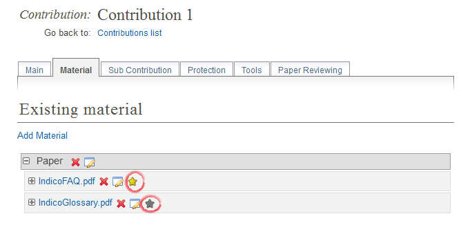

Indico’s FAQ¶
Downloading and Installing¶
From where can I download the latest Indico Release?¶
You can download the lastest release of Indico from:
http://cdswaredev.cern.ch/indico
General Event¶
How do I create the proceedings for my conference?¶
Step 1: Go to the Contributions option in the left menu in the Management Area.
You can mark a file as a main resource through the Management Area of the
contribution it belongs to (which you can access by clicking on the contribution’s name).
From there, you need to go to the tab Material and then click on  to mark as main resource. Only one document can be marked as main resource.
In the example below, IndicoFAQ.pdf is the main resource (yellow star as
oppposed to gray star).
to mark as main resource. Only one document can be marked as main resource.
In the example below, IndicoFAQ.pdf is the main resource (yellow star as
oppposed to gray star).

The files marked as main resource will be used to build the proceedings.
Step 2: From the Management area within your conference, go to the Contributions area and above the list of contributions there is a button for proceedings. If there are resources along with the contribution the main resource will be shown in the proceedings

I log in but I am taken back to the login page again, how can I avoid this?¶
Enable cookies within your browser and try to log in again.
How do I enter the management/modification area of an item in Indico?¶
Wherever you see the small red pen  or the edition botton
or the edition botton  you can click on this
and modify the item.
you can click on this
and modify the item.
How do I restrict the access rights of my event to certain users?¶
In order to do that, go to the Managment Area of your event and select the ‘Protection’ entry in the side menu. Once that you are in the protection settings, pay attention to the ‘Access Control’ settings. In order to set the access rights, you have to make your event ‘Private’ first by changing its ‘Current status’ to either ‘Private by itself’ or ‘Private by inheritance’ (if available). Once the event is private, add users to the ‘Users allowed to access’ list by clicking the ‘Add user to list’ button. A form will be displayed in which you can search for users by entering their family name, first name, etc... You can also restrict the access to groups of users by filling the ‘Group name’ entry of the search form and select one of the resulting groups. All the people included in the group will be granted access to the event.
For example, if somebody wants to grant access to his/her event only to users from the CERN, he/she will first search for the group containing all the CERN users (namely ‘CERN Users’) and add this group to the list of users allowed to access. The ‘Access Control’ section will then look like this :

Fore more on protection in Indico, see Protection System.
How do I export something into Microsoft Excel?¶
- With Windows:
- Excel 2007: Click on the icon
 , then on Open with Microsolf Excel 2007
, then on Open with Microsolf Excel 2007 - Excel 2010: Same as above
- Excel 2007: Click on the icon

- With Mac: Click on , an Excel document will automatically be opened
Table Of Contents
- Indico’s FAQ
- Downloading and Installing
- General Event
- How do I create the proceedings for my conference?
- I log in but I am taken back to the login page again, how can I avoid this?
- How do I enter the management/modification area of an item in Indico?
- How do I restrict the access rights of my event to certain users?
- How do I export something into Microsoft Excel?